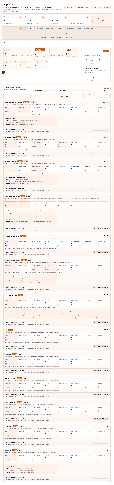

Что проверять
Live CRM demo, публичный repo, интерфейс продаж и связку demo -> artifact -> source.
Страница продукта
Проверяемый CRM-прототип для B2B/sales демонстрации: pipeline, клиенты, каталог, demo-first упаковка и публичный source trail.

Live CRM demo, публичный repo, интерфейс продаж и связку demo -> artifact -> source.
Продуктовая упаковка AI-assisted CRM-прототипа для быстрой проверки гипотезы командой.
Показывает, как CRM может объяснять клиентскую базу, сделки и next actions без долгого onboarding.
Эта страница подготовлена агентом, чтобы human не рассказывал, а показывал проверяемый результат.
Live CRM demo, public source repository, sales interface and demo-to-source traceability.
Packaged an AI-assisted CRM prototype into a quickly verifiable product artifact.
Shows how CRM can clarify clients, deals and next actions without a long onboarding flow.
The page turns a prototype into a proof path: open demo, inspect repo, verify artifact.